売り越しと二重の注文を防ぐ
人気商品の最後の 1 個に、同時に何人も注文した場面を自動で再現して確かめています。在庫がマイナスになることはありません。
自社ブランドのための EC サイト
お客様が買い物をする「店舗画面」と、お店の人が商品や注文を扱う「管理画面」の二つで動く、日本向けの通販サイトです。見た目だけの試作ではなく、在庫・消費税・ログイン・権限といった、実際にお店を開くときに困るところから作っています。
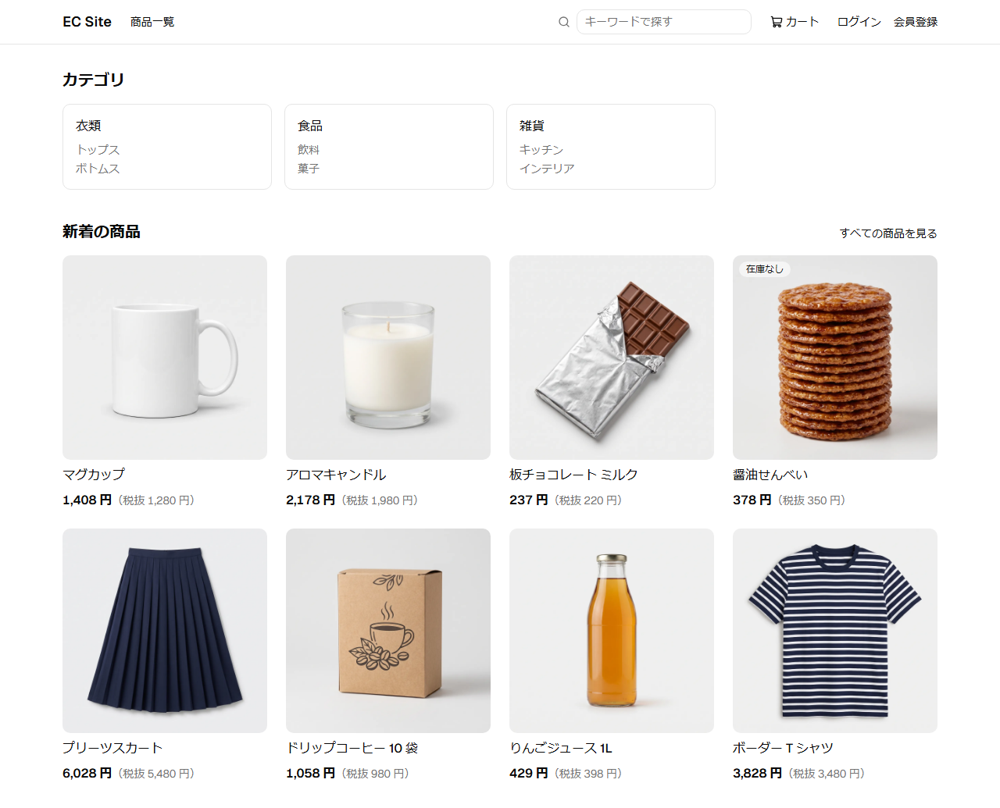
お客様ができること
会員登録をしたお客様が、商品を探して注文し、注文の状況を自分で確かめられます。
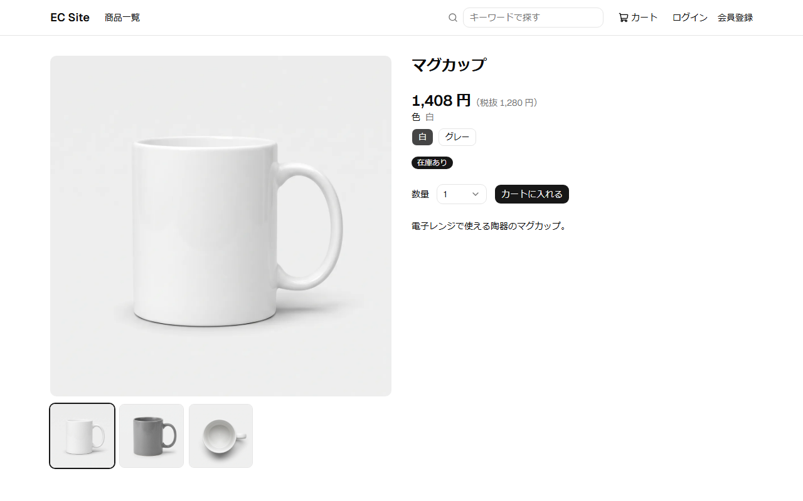
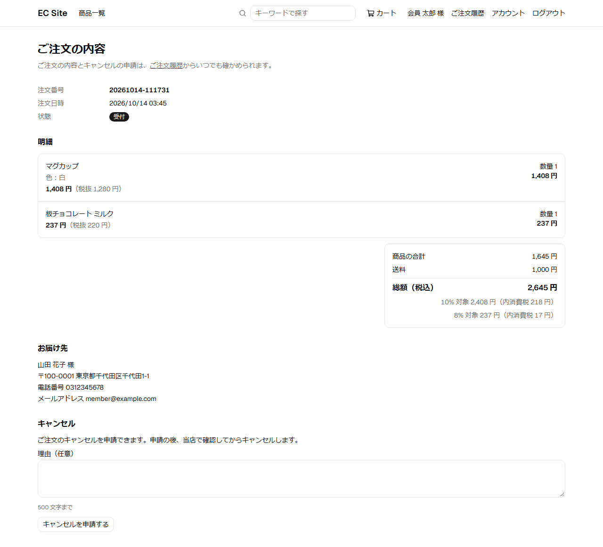
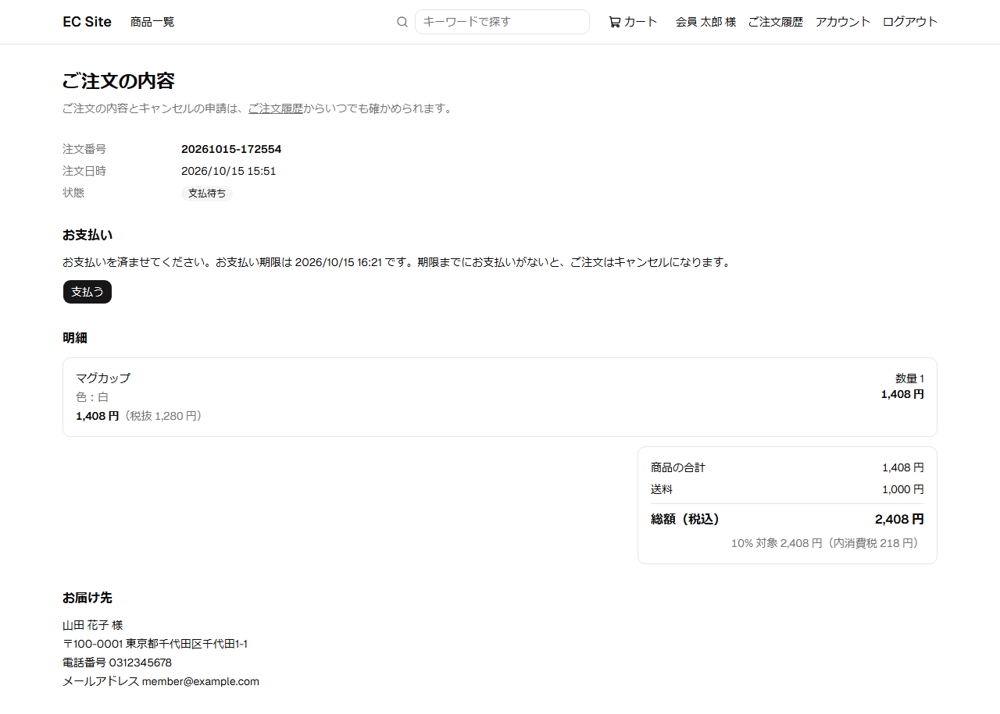
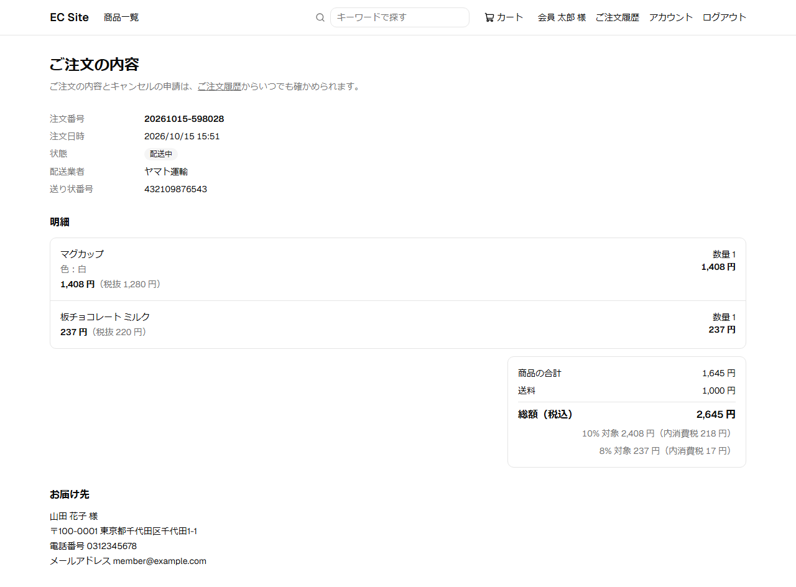
お店の人ができること
専門の知識がなくても、画面の案内に沿って商品を出し、在庫を直し、注文を扱い、売れ行きを確かめられます。
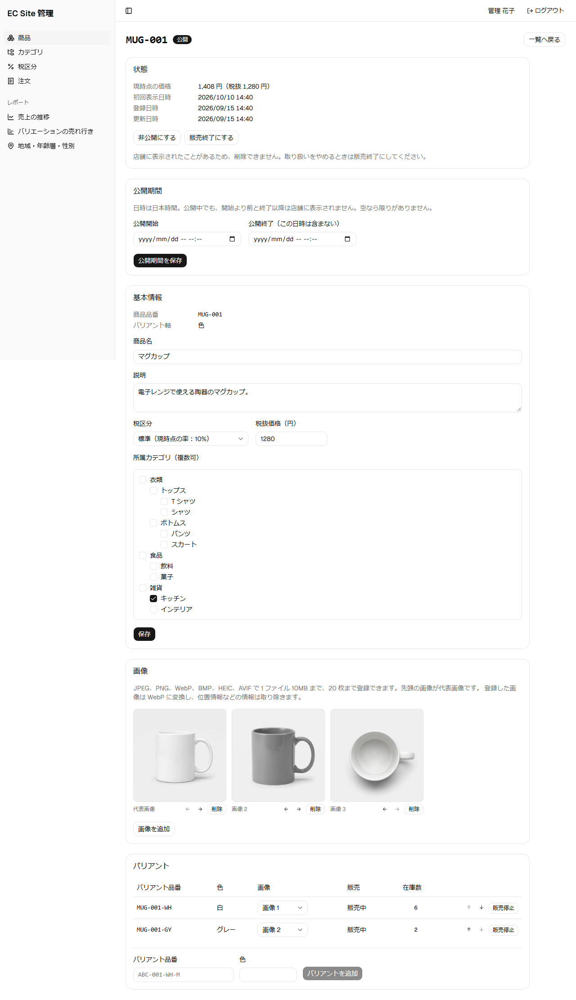
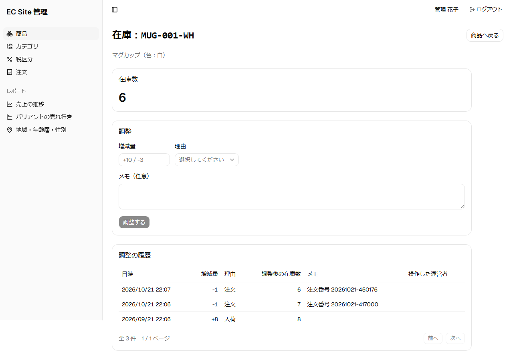
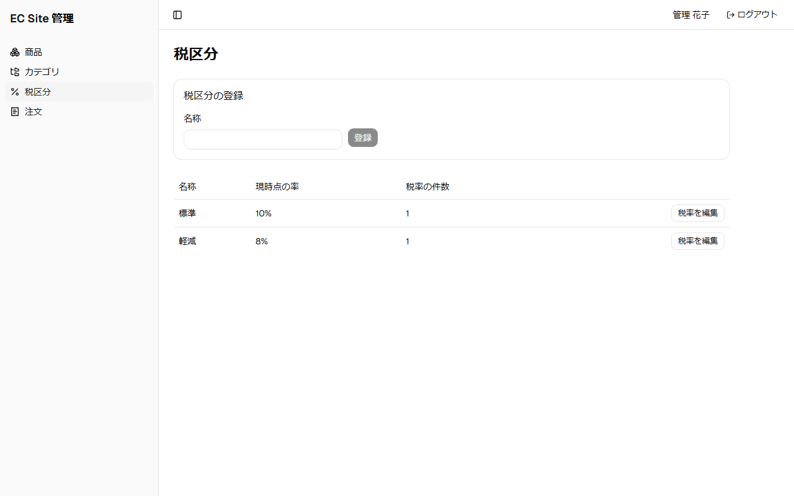
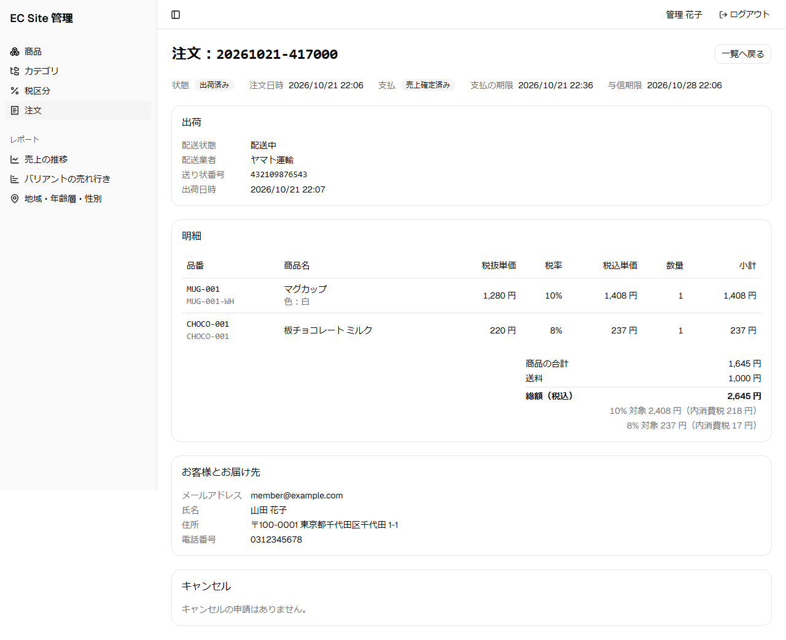
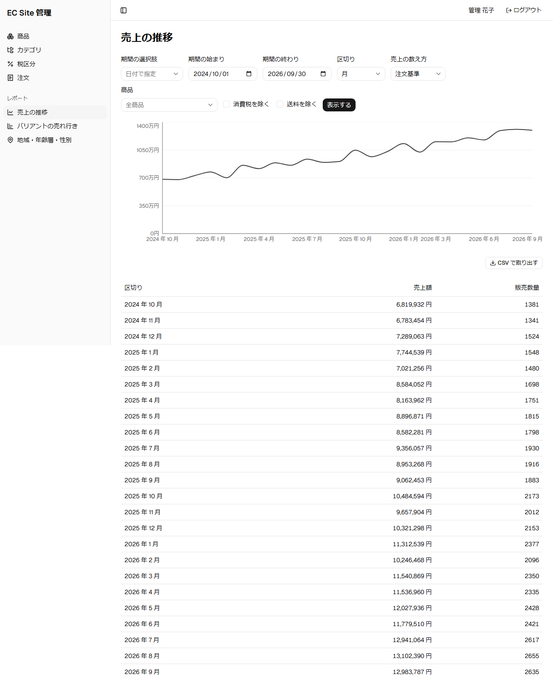
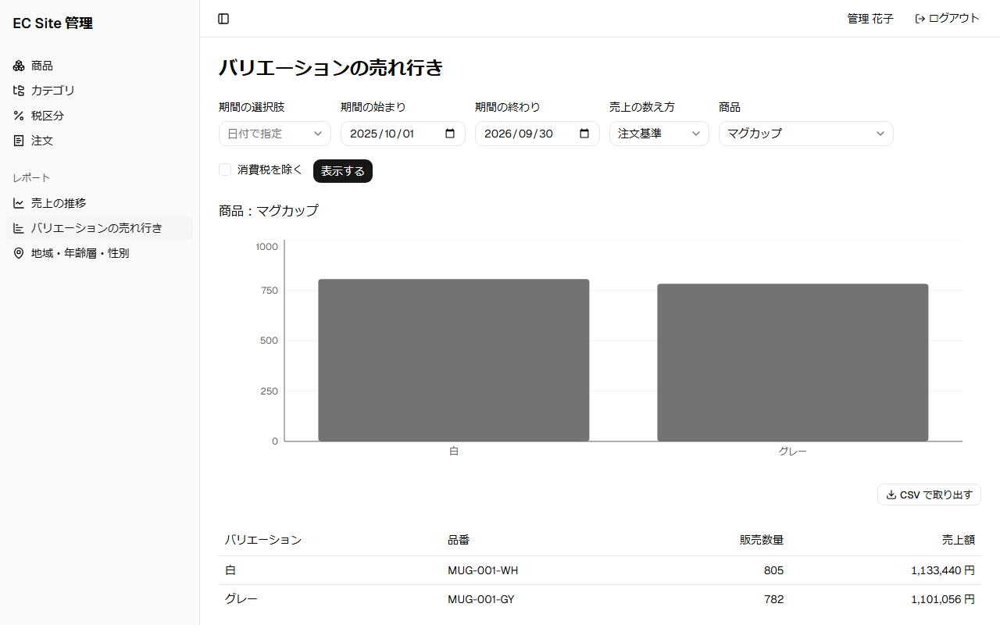
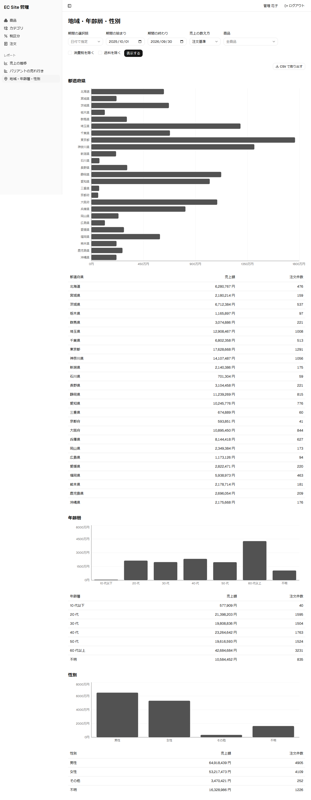
安心して任せられる理由
人気商品の最後の 1 個に、同時に何人も注文した場面を自動で再現して確かめています。在庫がマイナスになることはありません。
カード番号は、外部の決済サービス（Stripe）の画面で入力します。サイト側はカード番号を受け取らず、保存もしないので、サイトからカード番号が漏れることはありません。
パスワードの管理を自前で作らず、実績のある認証の仕組みを使っています。お客様と運営者のアカウントも完全に分けています。
変更を入れるたびに、1,500 件以上の自動テストが流れます。新しい機能を足して、前の機能が壊れたまま出ることを防ぎます。
作り方
一人で開発していますが、チームで本番のサービスを作るときと同じ手順を守っています。作るものを文書で決め、決めたとおりに動くことをテストで証明してから、次に進みます。
| サーバー | 業務ごとに部品を分け、将来は別々のサービスに切り出せる形にしています。Java 21 / Spring Boot / Spring Modulith / PostgreSQL / jOOQ |
|---|---|
| 店舗画面 | 表示が速く、検索エンジンにも読まれやすい作り。Next.js / TypeScript / Tailwind CSS |
| 管理画面 | 表や入力の多い業務向けの作り。React / TanStack Query / React Hook Form |
| 決済 | カード番号を扱わない、決済サービスの支払の画面を使う方式。Stripe（テストモード） |
| ログイン | 標準の方式（OpenID Connect）に沿った専用の認証サーバー。Keycloak |
| 品質 | 変更のたびに自動でテストし、ブラウザの通し操作まで確かめます。JUnit / Testcontainers / Vitest / Playwright / GitHub Actions |
| 運用 | アクセスが増えたら、同じサーバーを並べて増やせる作りにしています。Docker / S3 互換ストレージ / Prometheus |
ここまで
「商品を見る → カート → 注文 → 支払 → 出荷 → 配送状況」の流れを省略せずに通し、集まった注文から、お店の人が売れ行きを確かめられるようになりました。